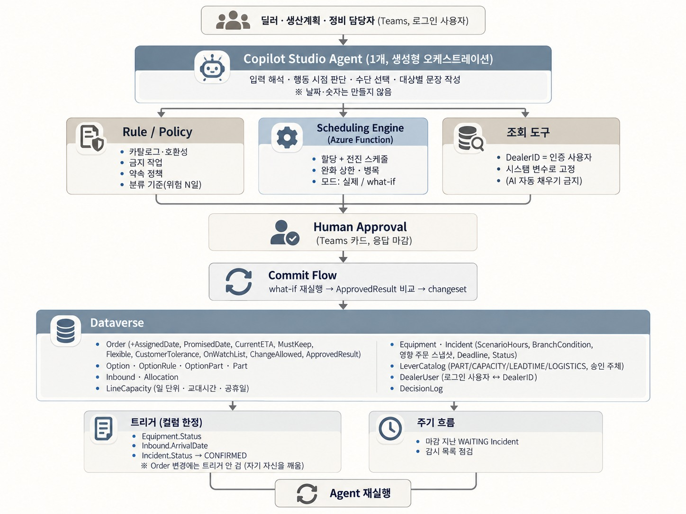
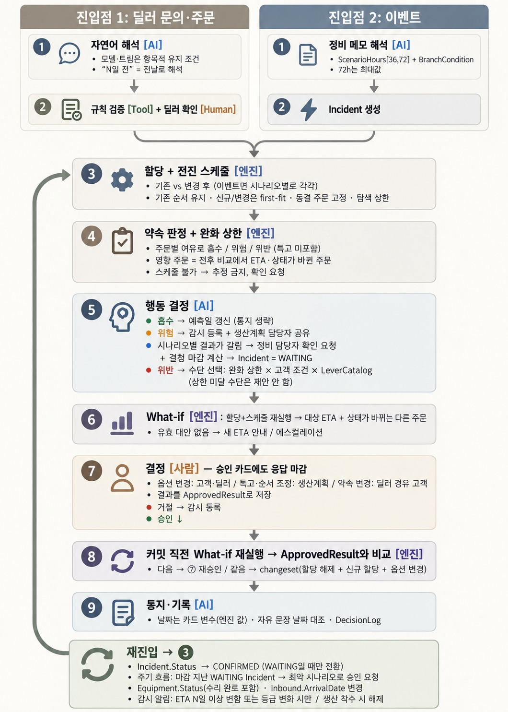
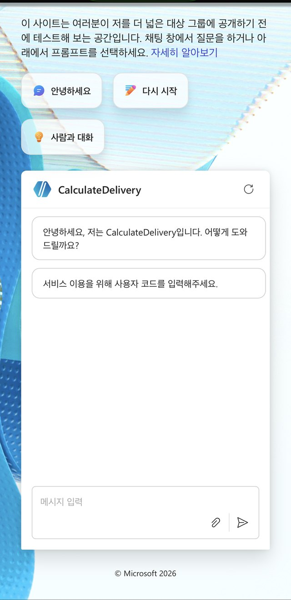
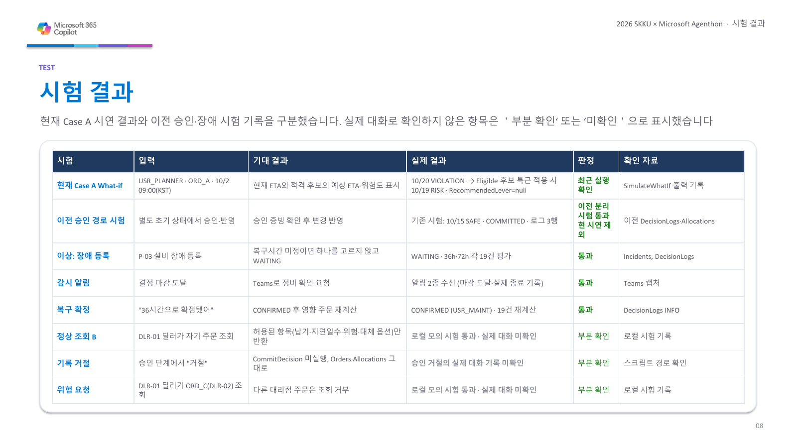
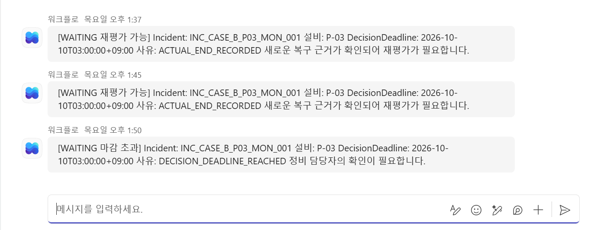

2026 SKKU × Microsoft Agenthon · Team Bgent
CalculateDelivery · 자동차 납기 대응 에이전트
주문 옵션, 부품 재고·입고, 생산라인 일정을 함께 계산해 딜러와 생산계획·정비 담당자가 납기 변경에 대응하도록 돕는 대회 프로토타입입니다.
문제 정의
부품 입고가 늦거나 설비가 멈추면 여러 주문의 납기가 한꺼번에 바뀔 수 있습니다. 생산계획 담당자와 정비 담당자, 딜러가 주문·재고·라인 일정을 각각 대조해야 하면 어떤 주문부터 대응할지, 특근이나 옵션 변경이 납기에 어떤 영향을 주는지 빠르게 판단하기 어렵습니다.
본인 기여
Team Bgent의 팀장으로 프로젝트 기획과 구현, 통합, 검증을 총괄했습니다. 딜러의 주문 조회, 생산계획 담당자의 납기 대안 비교, 정비 담당자의 복구 시간 확인을 사용자 역할별 흐름으로 정리하고, 팀이 만든 계산 도구와 에이전트 대화를 연결하는 작업을 이끌었습니다.
에이전트와 계산 엔진의 역할
-
1. 요청 해석
Copilot Studio 에이전트가 문의를 해석하고 등록된 데모 사용자 코드와 역할에 맞는 도구를 선택합니다.
-
2. 납기 계산
Power Automate가 Office Scripts를 호출합니다. 스크립트는 역할을 다시 확인한 뒤 Excel 데이터로 예상 납기와 위험 상태를 계산합니다.
-
3. 대안 비교와 장애 대응
에이전트는 계산 엔진이 반환한 값으로 조건을 충족한 What-if 대안을 보여줍니다. 복구 시간이 미정인 장애는 대기 상태로 두고 Teams로 확인을 요청합니다.
-
4. 담당자 확인
정비 담당자가 복구 시간을 확정하면 영향 주문을 다시 계산합니다. 주문 변경 승인과 반영은 별도로 구현해 시험했습니다.
시스템 및 업무 흐름 설계도
시스템 설계도는 Azure Functions와 Dataverse를 사용하는 확장안을 보여줍니다. 대회 제출본은 Power Automate와 Excel Office Scripts로 구현했고, 납기 대안 시연은 What-if 비교까지 진행했습니다.




시연 및 시험 결과
생산라인 1개, 설비 1대, 주문 20건으로 구성한 가상 데이터에서 시험했습니다.


- 납기 대안 비교. 한 주문의 예상 납기는 10월 20일(위반)이었고, 특근을 적용하는 가정에서는 10월 19일(위험)로 계산됐습니다. 시연에서는 원본 주문을 유지한 채 두 결과를 비교했습니다.
- 설비 장애 대응. 복구에 36시간과 72시간이 걸리는 두 경우를 계산하고, 시간 확정 전에는 장애를 대기 상태로 유지했습니다. 시험에서 복구 시간을 36시간으로 확정한 뒤 영향 주문 19건을 다시 계산했습니다. 이 집계에는 장애 기준 시각 이전에 배정된 일부 주문도 포함됩니다.
- 예외 응답. 이미 요청 납기 범위에 있는 주문에는 개선이 필요 없다고 안내했고, 존재하지 않는 주문에는 주문 ID를 다시 확인하도록 응답했습니다.




확장 방향
Microsoft 로그인과 사용자 역할을 연결하고, 설비·공정·주문 관계를 반영해 실제로 장애 설비를 거치는 주문을 가려내는 것이 후속 과제입니다. 동시 사용과 계산 규모를 늘릴 때는 Dataverse와 Azure Functions로 확장하는 방향을 구상했습니다.